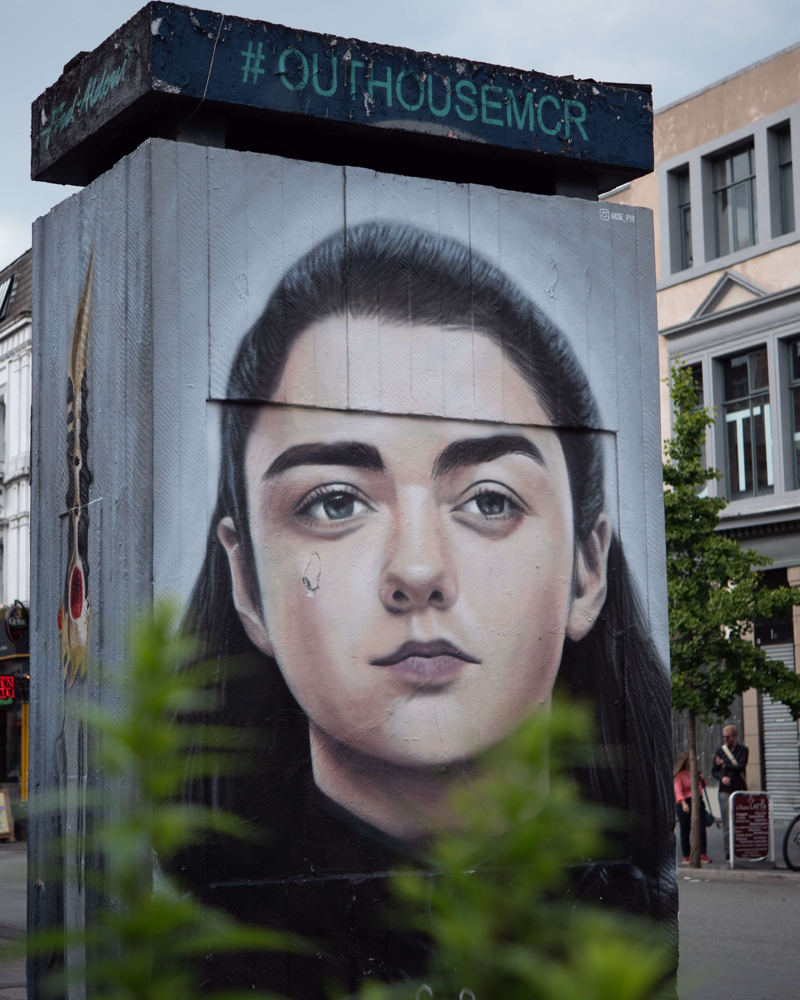

House Stark
Arya Stark
Princess Arya Stark is the third child and second daughter of Lord Eddard Stark and his wife, Lady Catelyn Stark. She is the sister of the incumbent Westerosi monarchs, Sansa, Queen in the North, and Brandon, King of the Andals and the First Men. After narrowly escaping the persecution of House Stark by House Lannister, Arya is trained as a Faceless Man at the House of Black and White in Braavos, using her abilities to avenge her family. Upon her return to Westeros, she exacts retribution for the Red Wedding by exterminating the Frey male line.